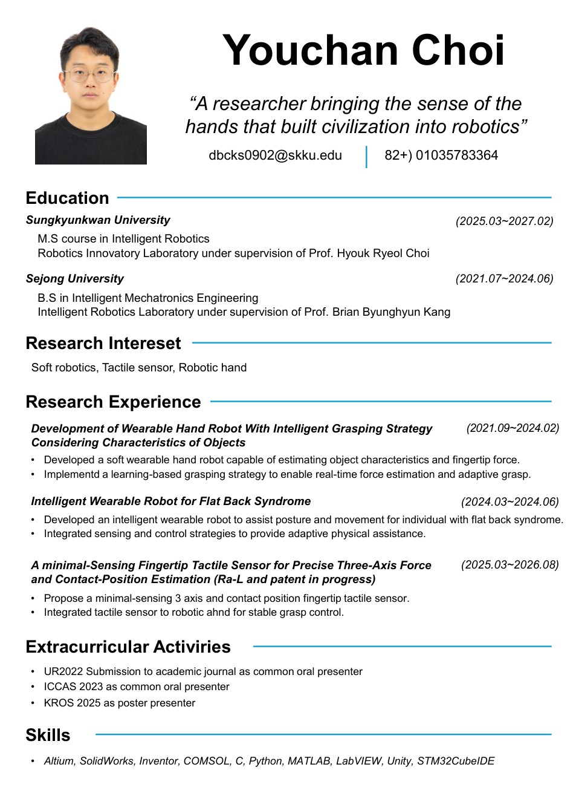

Sungkyunkwan University
M.S. course in Intelligent Robotics
Robotics Innovatory Laboratory · Prof. Hyouk Ryeol Choi
촉각 센서와 로봇 응용 연구. 센서 구조·회로 설계, 힘·접촉 위치 추정과 실험 평가를 수행하며 웨어러블 로봇 계측·제어 연구에도 참여.
dbcks0902@skku.edudbcks0902@naver.com+82 10-3578-3364성균관대학교 지능형로봇학과
석사과정
M.S. course in Intelligent Robotics
Robotics Innovatory Laboratory · Prof. Hyouk Ryeol Choi
B.S. in Intelligent Mechatronics Engineering
Intelligent Robotics Laboratory · Prof. Brian Byunghyun Kang
정전용량 기반 3축 힘·접촉 위치 추정과 로봇손 통합, 파지 제어 적용.
RA-L 논문 및 특허 준비 중
관련 연구 보기 ↗물체 특성·손끝 힘 추정을 위한 웨어러블 로봇 장갑 연구 참여. 장력·파지력 측정 장치와 구동 제어 담당.
관련 연구 보기 ↗일자허리 증후군 사용자의 자세·움직임 보조를 위한 웨어러블 로봇 센싱·제어 연구.
